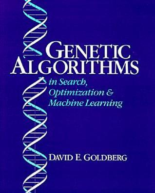

back to main page
Course details
| Course Name |
Course Code |
Credits |
Semester |
Year |
| Soft Computing |
MC5145 |
3 |
Autumn |
2024 |
About:
This soft computing course encompasses a variety of computational techniques designed to handle imprecision, uncertainty, and partial truth,
mimicking the human ability to make decisions in complex, real-world situations. Unlike traditional hard computing, which requires precise and exact solutions,
soft computing techniques are more flexible and tolerant of approximation.
This course is designed to equip students with the principles and techniques of soft computing, which includes a set of computational methods
that deal with imprecision, uncertainty, and approximation to achieve tractable, robust, and low-cost solutions.
The course covers various soft computing paradigms such as fuzzy logic, neural networks, genetic algorithm and combined (hybrid) techniques.
Contents:
This course will cover fundamental concepts used in soft computing.
-
Introduction to Introduction to soft computing, Soft computing versus Hard computing, why soft computing needed and some of the application of soft computing.
-
Introduction to fuzzy logic and fuzzy sets, comparision of fuzzy with crisp sets, fuzzy membership functions, operations on fuzzy sets, fuzzy relations,
rules, propositions, implications and inferences, defuzzification, fuzzy logic controller design and applications of fuzzy logic.
-
Artificial Neural Networks (ANNs), neurons and perceptrons, MultiLayer Pereceptron (MLP),
Backpropagation Algorithm, supervised vs unsupervised ANN, Kohonen Self Organizing Maps (K-SOMs), Learning Vector Quantization (LVQ), Radial Basis Function (RBF) Networks ,
Hebbian learning, Hop-field networks.
-
Derivative based optimization techniques: Descent methods, gradient descent, Newton's method...etc.
-
Derivative free optimization techniques: Genetic Algorithm (GA), Simulated Anneling (SA), Random Search, and Downhill simplex search
-
Fundamanetals of genetic algorithms, genetic operators, genetic modeling.
-
Hybrid approaches: combinations of neural networks, fuzzy logic, and genetic algorithms.
Objective:
-
To understand the fundamentals of theory of fuzzy sets and fuzzy logic including the design of fuzzy controller and their application for solving real-world problems;
-
To learn basic types of neural networks and their applications;
-
To learn optimization techniques such as Derivative-based optimization ( Descent Methods, method of Steepest Descent, Newton’s Methods, Nonlinear Least-Squares Problems ) and Derivative-free optimization ( Genetic Algorithms, Simulated Annealing, Random Search…etc.);
-
To understand the workings of genetic algorithms and their application for solving real-world problems;
-
To learn the combined (hybrid) techniques: we will cover the following hybrid techniques;
- Genetic Algorithms – Neural Networks
- Genetic Algorithms – Neural Networks
- Neural Networks – Fuzzy Logic
Assessment:
-
Class test(s): 10%
-
Assignment(s): 20%
-
Mid-term written examination : 20%
-
End-term written examination: 50%
Prerequisites:
The following prerequisites necessary for this course:
- Basic concepts of AI, including search algorithms,and machine learning.
-
Basic knowledge of differential calculus, linear algebra and should familiar with probability and statistics.
-
Data structure and algorithms
- Programming skills in C, C++, Python or Java, MATLAB, etc.
-
Critical thinking and problem-solving skills.
Reference books:
|

|
Book title: Genetic algorithms in search, optimization, and machine learning
Author(s): David E. Goldberg
Publisher: Addison Wesley,N.Y.,1989.
|
|
|
Book title: Fuzzy Logic with Engineering Applications
Author(s): Timothy J. Ross
Publisher: Wiley India.
|
-
[Book] S. Rajasekaran, G.A. Vijayalakshmi Pai, Neural Networks, Fuzzy Logic and Genetic Algorithms:
Synthesis and Applications , 2nd edition, 2018.
-
[Book] S. N. Sivanandam, Principles of Soft Computing, 2nd Edition, John Wiley, 2011.
copyright@ajitkumarsahoo.2024